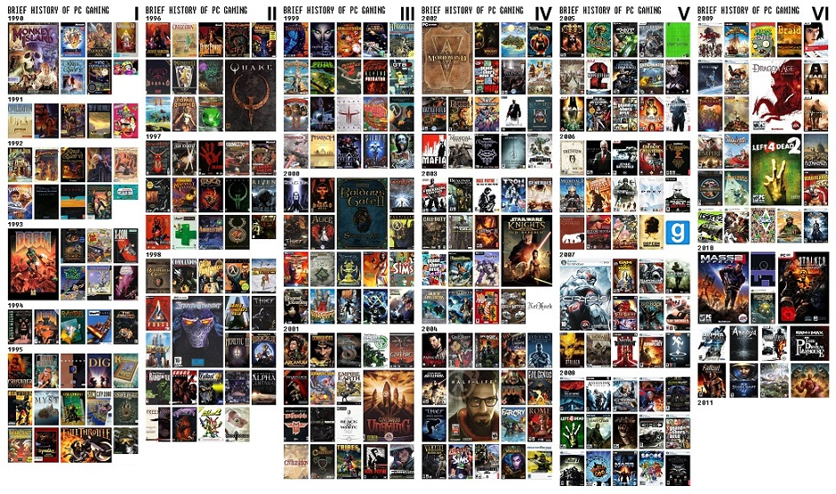
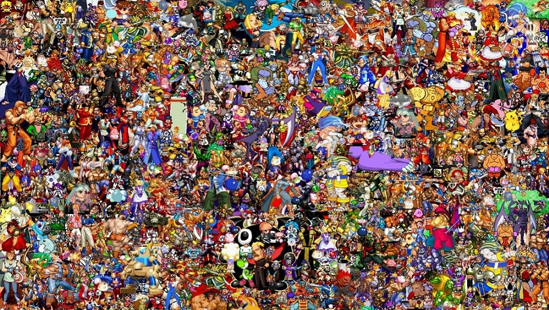
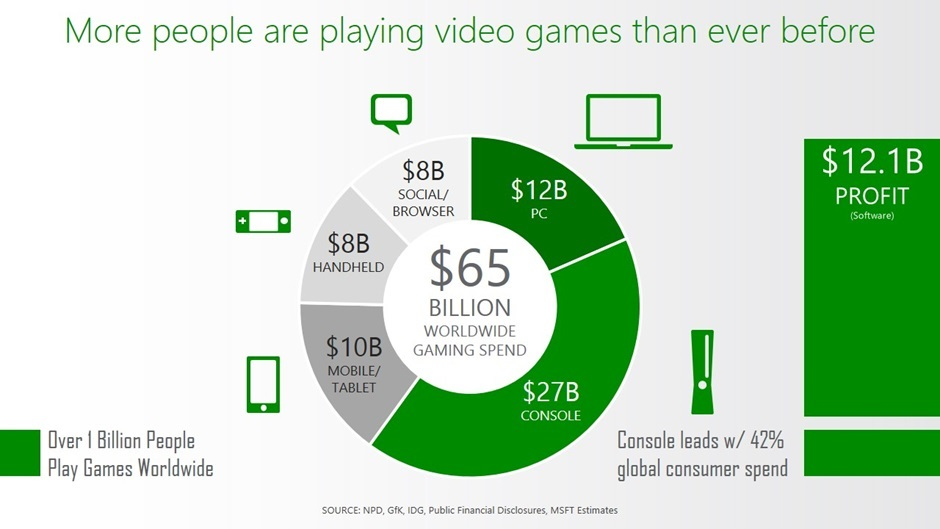

The world's first commercially available general-purpose electronic computer, derived from the "Manchester Baby", was the Ferranti Mark 1 (1951). Dietrich Prinz wrote a (very limited) version of Chess for it, and Christopher Strachey wrote a version of Checkers, both in 1951 or 1952.
The Ferranti Mark 1 (1951)

William Higinbotham

In 1958 a physicist named William Higinbotham, who had previously worked at Los Alamos on the triggering electronics of the first nuclear bomb, was working at Brookhaven Lab with a Donner Model 30 analogue computer that was used to compute ballistics trajectories. He was trying to come up with something "fun" for the general public to see on Visitor's Day...
He connected the computer to an oscilloscope and made Tennis For Two.
The Brown Box

In 1968, an inventor and TV engineer called Ralph Baer, who'd been toying with the idea of making "TV Games", built an experimental device called "The Brown Box".
The Brown Box was a piece of custom electronics, and is not an actual computer, but it was the first system for "video games". It was commercialised as the "Odyssey", complete with hilarious transparent TV screen overlays.
Atari 2600

Spacewar and the Odyssey both inspired an electrical engineer called Nolan Bushnell to set-up a company in 1972 which would make its own "video games". He called it "Atari". They produced a game called "PONG". In need of a variation on the PONG theme, Bushnell thought it would be cool to flip it on its side and replace one of the paddles with a destructible "brick wall". He hired an eager young employee by the name of Steve Jobs to design and build the electronics (once again, a custom job, not a general computer). If you know about Jobs, you'll be able to guess what he did next...
...he got his pal Steve Wozniak to do all the work, while Jobs took all the credit (and most of the money).
The 1983 North American Video Game Crash

The video game crash of 1983, also known as Atari shock in Japan, was a massive recession of the video game industry that occurred from 1983 to 1985. Revenues had peaked at around $3.2 billion in 1983,then fell to around $100 million by 1985 (a drop of almost 97 percent). The crash was a serious event that brought an abrupt end to what is considered the second generation of console video gaming in North America.
The crash almost destroyed the then-fledgling industry and led to the bankruptcy of several companies producing home computers and video game consoles in the region, including the fastest-growing U.S. company in history at that point, Atari. It lasted about two years, and many business analysts of the time expressed doubts about the long-term viability of video game consoles. The North American video game Console industry recovered a few years later, mostly due to the widespread success of the Nintendo Entertainment System (NES), which was soft launched in New York City in late 1985 and had become extremely popular in North America by 1987.
There were several reasons for the crash, but the main cause was saturation of the market. The full effects of the industry crash would not be felt until 1985.
E.T. the Extra-Terrestrial (also referred to simply as E.T.) is a 1982 adventure video game developed and published by Atari, Inc. for the Atari 2600 video game console. It is based on the film of the same name, and was designed by Howard Scott Warshaw. The objective of the game is to guide the eponymous character through various screens to collect three pieces of an interplanetary telephone that will allow him to contact his home planet.Warshaw intended the game to be an innovative adaptation of the film, and Atari thought it would achieve high sales figures based on its connection with the film, which was extremely popular throughout the world.
Negotiations to secure the rights to make the game ended in late July 1982, giving Warshaw only five and a half weeks to develop the game in time for the 1982 Christmas season. The result is often cited as one of the worst video games released and was one of the biggest commercial failures in video gaming history. The game's commercial failure and resulting effects on Atari are frequently cited as a contributing factor to the video game industry crash of 1983. E.T. is frequently cited as a contributing factor to Atari's massive financial losses during 1983 and 1984.
It was generally believed that as a result of overproduction and returns, millions of unsold cartridges were buried in an Alamogordo, New Mexico landfill. In 2013, plans were revealed to conduct an excavation to determine the accuracy of reports about the burial, and in April of the following year, the diggers confirmed that the Alamogordo Burial did include E.T. cartridges among other titles. James Heller, the former Atari manager who was in charge of the original burial, was also on hand at the excavation and revealed to the Associated Press that 728,000 cartridges of various titles were buried.
Nintendo
The North American video game crash had two long-lasting results. The first result was that dominance in the home console market shifted from the United States to Japan. When the video game market recovered in the late 1980s, Nintendo's NES was by far the dominant console, leaving only a fraction of the market to a resurgent Atari battling Sega's Master System for the number-two spot soon after. By 1989, home video game sales in the United States had reached $5 billion, surpassing the 1982 peak of $3 billion during the previous generation. A large majority of the market was controlled by Nintendo, whose NES ultimately sold more than 35 million units in the United States, exceeding the sales of other consoles and personal computers by a considerable margin. Other Japanese companies also rivalled Nintendo's success in the United States, with Sega's Mega Drive/Genesis in 1989 and NEC's PC Engine released the same year.
The Console War

It's the console war that arguably laid the foundations of the video games industry as we know it today. Sega's battle against Nintendo in the late-80s and early 90s is best known as the first clash between Sonic and Mario. But the skirmish also proved that Nintendo wasn't the only games firm capable of making money in North America after an earlier crash had wrecked Atari and others' prospects.The contest also helped establish that console gaming wasn't just for kids. Titles such as Mortal Kombat - featuring blood and gore on Sega's platform, and grey sweat on the more "family friendly" Super Nintendo Entertainment System - proved that targeting a more mature audience could be fruitful, as well as creating the need for gaming's first age ratings system.
PC Gaming

While the console market grew, crashed and resurget PC gaming went through its own set of changes. From it's humble beginnings in 1961's "SpaceWar" to its modern day wonderful chaotic madness it has grown to be a multi-billion industry since its boom in the 1990's.
The history of the computer game is, in parts, a history of technology. The computer game requires technology capable of handling large amounts of data and of representing this data. The relationship between a technological phenomenon such as the computer and the less formally based culture is not a simple one: some theories will claim that technology determines culture, some will claim that culture determines technology. It may be most reasonable to see this as a history of mutual influences, where technology can inspire (or enable) cultural developments, and cultural developments can inspire new technology. To quote an obvious example, the computer game was originally developed on equipment designed for military and academic purposes. But today the computer game is the driving force in the development of much hardware such as 3d graphics accelerators.
-

PC Games -

Game Characters -

Video Games Infograph -

Video games Infograph
Today

Today, the video game industry is a juggernaut of development; profit still drives technological advancement which is then used by other industry sectors. Though not the main driving force, casual and indie games continue to have a significant impact on the industry, with sales of some of these titles such as Minecraft exceeding millions of dollars and over a million users. While development for consoles and PCs is not dormant, development of mobile games is still lively.[citation needed] As of 2014, newer game companies arose that vertically integrate live operations and publishing, rather than relying on a traditional publishers, and some of these have grown to substantial size.


This website was created for the Web Programming course at the University of Iceland by: Kristján Gunnarsson and Snorri Ágúst Snorrason